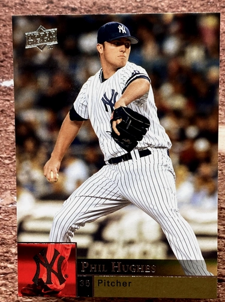

Phil Hughes
Career Highlights & Facts
(Facts are AI-generated and may require verification)
- Selected as the 23rd overall pick in the amateur draft.
- Recorded 1040 strikeouts over 1291.0 innings pitched.
- Achieved a single-season WAR of 4.6 while pitching for a club in the central division.
Would you like to find out more about Phil Hughes?
This bio is not assigned. Want to write a SABR bio? Contact
bioproject@sabr.org
.
Full Name
Philip Joseph Hughes
Born
June 24, 1986 at Mission Viejo, CA (USA)
Stats
Baseball Reference
Retrosheet
Philip, Phillip, or Phil Hughes may refer to:Phillip Hughes (1988–2014), Australian cricketer
Phil Hughes (baseball), American baseball player
Phil Hughes, English cricketer
Phil Hughes (footballer), Northern Irish football player
Philip Hughes, Irish football player
Philip Hughes (historian) (1895–1967), Roman Catholic priest and historian
Philip Edgcumbe Hughes (1915–1990), Anglican clergyman and New Testament scholar
Philip Joseph Hughes Jr., convicted American serial killer
G. Philip Hughes, American diplomat
Career Totals
| WAR | W | L | ERA | G | GS | SV | IP | SO | WHIP |
|---|---|---|---|---|---|---|---|---|---|
| 11.0 | 88 | 79 | 4.52 | 290 | 211 | 3 | 1291.0 | 1040 | 1.314 |
Statistics via Baseball-Reference.com
The Original Clue